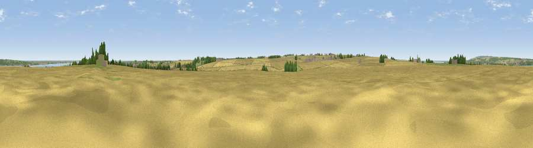

Viewpoint near Barton-upon-Humber
#36789 in England · top 70% of its area beats it · near Barton-upon-HumberThe view, rendered

A 360° render of this exact spot computed from the terrain model, tree cover and land cover — summer colours, afternoon light, calibrated against photographs of famous viewpoints. Real trees, hedges and buildings will differ in detail.
The panorama
Grey silhouette: terrain skyline in each direction (720 bearings, Earth curvature and refraction included). Dashed green: skyline with trees (+15 m) and buildings (+8 m) as obstacles. Blue strip: how far the ground is visible on each bearing.
Where the view opens
Wedge length = distance to the farthest visible ground on that bearing (vegetation-aware). Rings at 10, 25 and 50 km.
What fills the view
79% cropland · 8% grassland · 6% woodland · 4% built-up · 2% water
Angular shares of the visible panorama (visual magnitude), not map area. Landscape diversity 0.35 (0–1 Shannon).
Key numbers
More beautiful places nearby
The staircase of upgrades: each row has a higher view potential than everything closer. Driving times are estimates from straight-line distance, calibrated against real road routing — check an actual route before setting out.
| Place | Direction | Drive | Score |
|---|---|---|---|
| Viewpoint near South Ferriby | WSW · 2 km | ~5 min | 58.1 |
| Viewpoint near Alkborough | W · 14 km | ~25 min | 59.0 |
| Viewpoint near South Cave | NW · 14 km | ~25 min | 60.9 |
| Viewpoint near Alkborough | W · 14 km | ~25 min | 62.1 |
| Viewpoint near Burton Stather | W · 14 km | ~26 min | 62.4 |
| Viewpoint near South Newbald | NW · 15 km | ~27 min | 64.9 |
| Viewpoint near Claxby | SSE · 26 km | ~42 min | 70.5 |
| Viewpoint near Claxby | SSE · 28 km | ~44 min | 71.5 |
53.67864, -0.46748 · source: osm peak · position refined by local search. Computed location — check access rights before visiting.